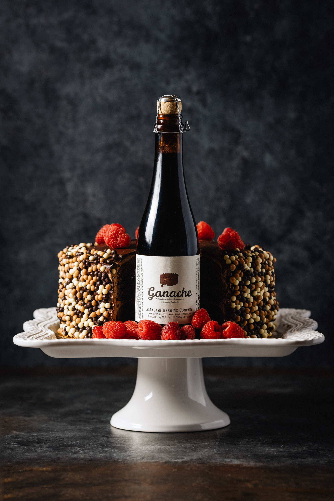

HOME
ALES
Ganache Dark Ale
Allagash Brewing Co.
The liquid equivalent of biting into a raspberry-filled dark chocolate cake. Aromas suggesting mixed berry and roasty cocoa meld with flavor notes of tart raspberry, cherry, and subtle coffee. Even without the addition of chocolate, Ganache gains its cocoa notes from a robust grain bill featuring Special B, caramel malt, raw wheat, oats, our 2-row base malt, Midnight wheat, and black malt. This dark burgundy-colored beer is fermented in stainless with both our house yeast and Brettanomyces claussenii before aging on fresh, local raspberries. No utensils necessary.
Located in Portland, ME, Allagash brewery strives to create some of the best Belgian-style beers in the world. As a certified B Corp, they're constantly pushing the sustainability of their brewing operation, putting employees first, and working to be a positive member of the community.
Check out their site HERE 